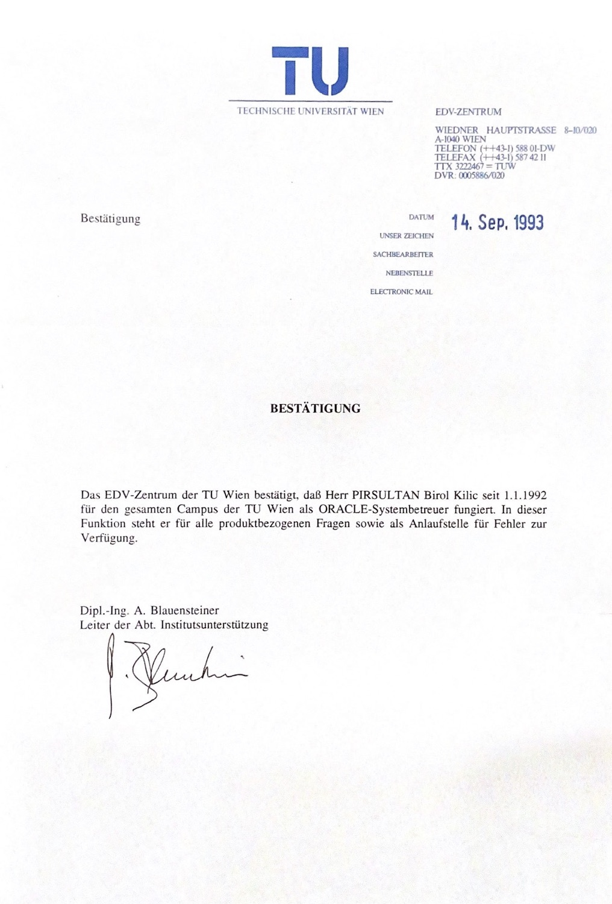

Über uns & Markenstrategie
Hintergrund zum Lehrprojekt, fiktive Unternehmensstruktur (Aufgabe 0) und gewählte Markenformen (Aufgabe 3)
Unternehmensprofil & Mitarbeiterstruktur (Aufgabe 0)
PiroMed Office (fiktiver Firmenname im Szenario: PiroMed Office GesmbH, Webgasse 12/9, 1060 Wien) ist ein fiktives Softwareunternehmen, das für die Lehrveranstaltung „Daten- und Informatikrecht“ an der Technischen Universität Wien entwickelt wurde.
Hinter dem Projekt steht Dipl.-Ing. Birol Kılıç. Er hat Elektrotechnik an der TU Wien studiert und beschäftigt sich seit vielen Jahren mit technischen, datenbankbezogenen und unternehmerischen Fragen. Das Projekt verbindet diese Erfahrungen mit der Idee einer übersichtlichen Verwaltungssoftware für Ordinationen.
Mitarbeiterzahl & Teamstruktur im fiktiven Unternehmen
Mitarbeiterzahl im fiktiven Unternehmen: Insgesamt 5 Personen (3 Vollzeit-Angestellte für Kundenbetreuung, Support und Administration unter der Leitung der fiktiven Ansprechpartnerin Monika Karenz sowie 2 externe technische Experten auf Honorarbasis für Softwareentwicklung und Systembetrieb).
Akademischer & technischer Hintergrund
Nach ersten Studienabschnitten an der ETH Zürich schloss Birol Kılıç sein Studium der Elektrotechnik an der Technischen Universität Wien als Diplomingenieur ab (1993). Bei der offiziellen Sponsionsfeier hielt er die Festrede für die Absolventinnen und Absolventen. Zudem war er ab 1992 am EDV-Zentrum der TU Wien als zentraler Ansprechpartner für ORACLE-Datenbanksysteme tätig.

Markenformen für das Projekt (Aufgabe 3)
Für die Lehrveranstaltung wurden drei unterschiedliche Markenformen ausgewählt, um die kennzeichenrechtlichen Anforderungen im Rahmen einer fiktiven Markenanmeldung darzustellen:
1. Wort-Bildmarke (Kombinierte Marke)
Beschreibung: Als Wort-Bildmarke vorgesehen ist die Kombination aus dem stilisierten Pluszeichen auf dunklem Grund und dem Schriftzug „PiroMed Office“. Die grafische Gestaltung soll die Unterscheidungskraft im Sinne des Markenrechts unterstützen.
2. Reine Bildmarke (Signet / Logo ohne Text)
Beschreibung: Als reine Bildmarke dient das reduzierte Plus-Signet ohne Textbestandteile, vorgesehen für App-Icons, Favicons und Benutzeroberflächen.
3. Farbmarke (Konturlose Farbmarke)
Hex-Code: #C9F24C · RGB: 201, 242, 76
Beschreibung: Als dritte Markenform verwenden wir das Limettengrün mit dem Farbcode #C9F24C. Die Farbe soll PiroMed Office auf der Website und in Unterlagen wiedererkennbar machen. Ob die Farbe als eigenständige konturlose Farbmarke eingetragen werden könnte (insbesondere im Hinblick auf Unterscheidungskraft bzw. Verkehrsgeltung), müsste vor einer tatsächlichen Anmeldung gesondert geprüft werden.
Nizza-Klassen
| Klasse | Waren- und Dienstleistungsbereich |
|---|---|
| Klasse 9 | Herunterladbare Software zur Terminplanung, Praxisorganisation und Büroablauforganisation im Gesundheitsbereich. |
| Klasse 42 | Bereitstellung von Online-Software (Cloud / SaaS) für das Praxismanagement und die elektronische Datenorganisation. |
Dokumentierte Markenprüfung & Recherche
Recherchedatum: 10. November 2026
Durchsuchte Register: Markenregister des Österreichischen Patentamtes (see-ip / Österreichischer Markenanzeiger) sowie die Datenbanken EUIPO eSearch plus und TMview.
Suchbegriffe & Ergebnis: Geprüft wurden die Bezeichnungen „PiroMed“ und „PiroMed Office“ in den Nizza-Klassen 9 und 42. Zum Recherchezeitpunkt wurden keine identischen eingetragenen Marken für Verwaltungssoftware im Gesundheitswesen ermittelt. Eine vollständige Ähnlichkeitsrecherche im Rahmen eines realen Anmeldeverfahrens hat nicht stattgefunden, da es sich um ein universitäres Lehrprojekt handelt.
Hinweis: Fiktives Unternehmenskonzept im Rahmen der Lehrveranstaltung „Daten- und Informatikrecht“ an der TU Wien (Wintersemester 2026).